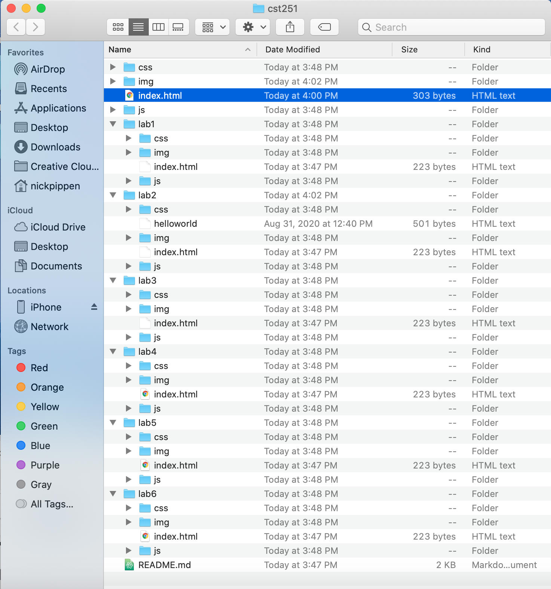
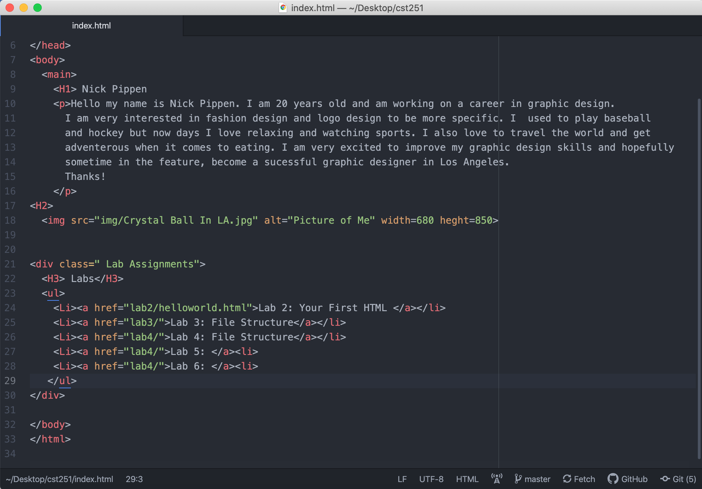
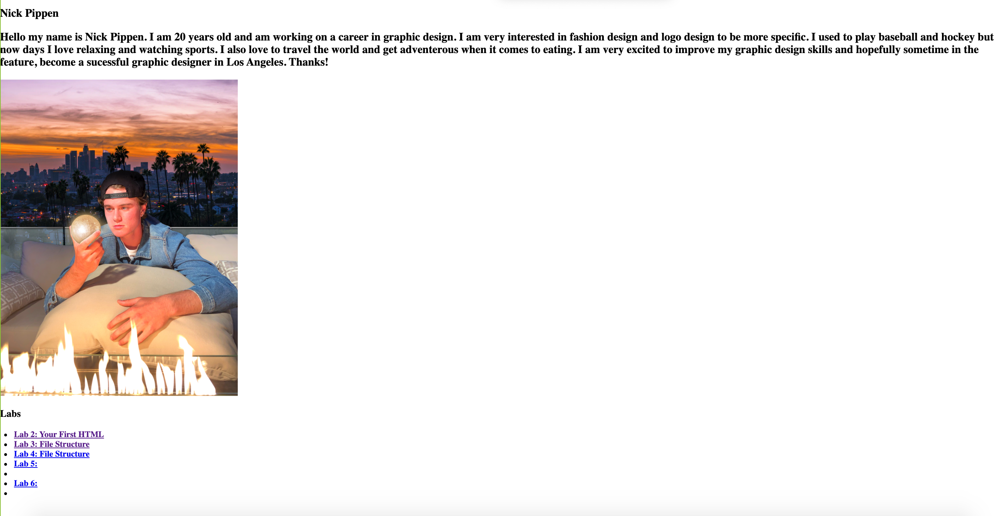

File Structure
This lab taught us how to stucture our folders and how to create the webpage in Atom.
We also learned how our the index files that we made would directly translate to the webpage.
Challenges
Perosnally I had a lot of trouble with my index file. For some reason mine was missing source
I had to spend some time re-creating a brand new repoatory. Once I made a new one, it was pretty
easy from there, with the help of my partner of course. Without him I'd have a lot of issues just
becuase I have some difficulty following some of the directions.
Results
We ended up getting eveything done once I overcame the problem with my missing index file.
I set up my webpage and included an image, an intro, and my labs. I was able to get a better
understanding of how to translate my comands from Atom to the webpage. I also was able to
get all my screenshots.


